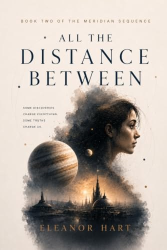

The Ordinary Infinite
The Meridian Sequence, Book 3
We seek the stars, we find ourselves.
Buy on Amazon
Eleanor Hart writes fiction and non-fiction. Her novels include the first three books of the Meridian Sequence (The Weight of Light, All the Distance Between and The Ordinary Infinite) and Almost. Her non-fiction title is Estranged by Choice, on cutting off parents.
The Meridian Sequence, Book 3
We seek the stars, we find ourselves.
Buy on Amazon
The Meridian Sequence, Book 2
Some discoveries change everything. Some truths change us.
Buy on AmazonThe Meridian Sequence, Book 1
Some journeys take you farther. Others take you home.
Buy on AmazonAn adult child's honest account of cutting off parents, and why it was right.
Buy on Amazon